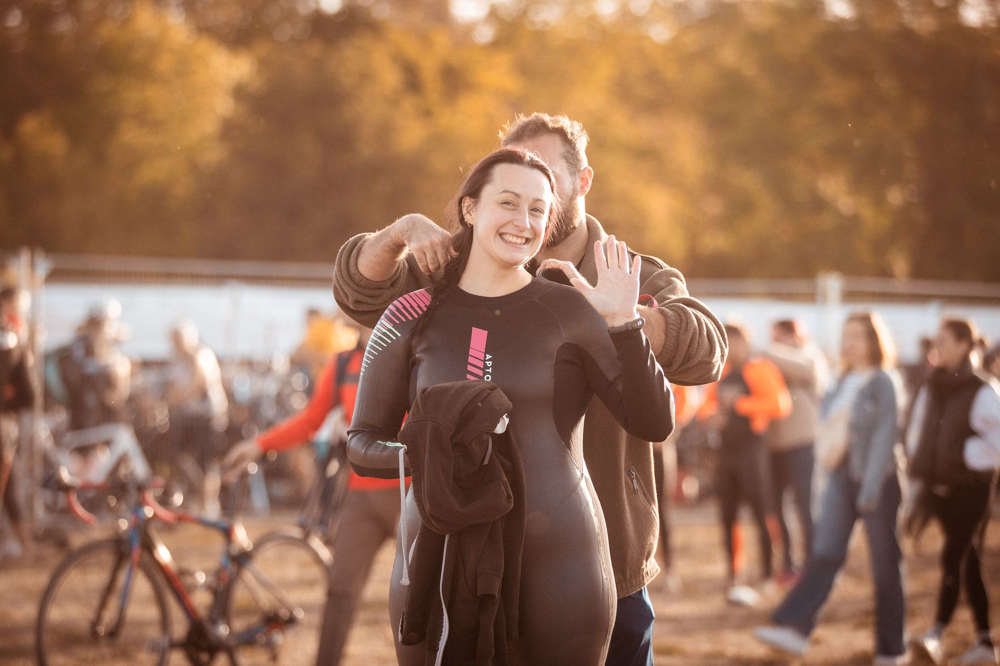

Rejoindre l'aventure · Premier triathlon Votre premier triathlon.
Trois sports, deux transitions, une arche d'arrivée. Ça impressionne avant, ça se prépare simplement, et on vous explique tout ici.
Le S*, fait pour commencer.
500 m de natation, une boucle de vélo, 5 km de course à pied, pas de temps limite. Trois dates en 2027, toutes le dimanche à 9h00.
Woippy**
Une boucle de vélo, une course à pied toute plate.
Le S* de Woippy → Dimanche 13 juin 2027 · 9h00Pierre-Percée***
Le lac et la forêt vosgienne, le dimanche matin.
Le S* de Pierre-Percée → Dimanche 19 septembre 2027 · 9h00Madine***
Tout plat, de la natation à l'arrivée.
Le S* de Madine →Pas encore prêt pour l'eau ? Les RUN 5, 6 et 7 KM se courent sans transition. Pour les enfants : MiniKids et Kids à Pierre-Percée et à Madine.
Étape par étape.
Ce qui vous attend entre le retrait du dossard et la ligne d'arrivée.
Le retrait du dossard
La veille ou le matin, avec une pièce d'identité. Vous repartez avec votre dossard, le bonnet, la puce et les autocollants pour le vélo.
Le parc à vélo
Vous installez vélo, casque et chaussures à votre emplacement. Prenez deux minutes pour repérer l'entrée, la sortie et votre place : c'est le meilleur investissement de la journée.
La natation
Bonnet de l'organisation sur la tête, combinaison si l'eau est fraîche. Pas besoin de partir devant : sur le côté, vous nagez à votre rythme.
La première transition
Combinaison enlevée, casque bouclé avant de toucher au vélo, et c'est parti. Pas de panique : personne ne chronomètre votre élégance.
Le vélo, puis la course
Vélo raccroché à sa place, chaussures de course aux pieds, et vous repartez pour la dernière partie. Les jambes sont bizarres les premières minutes : c'est normal.
L'arrivée
L'arche, le speaker, vos proches. Sur le S*, il n'y a pas de temps limite : elle vous attend, quoi qu'il arrive.
Ce qu'il faut apporter.
L'organisation fournit le dossard, le bonnet, la puce de chronométrage et les autocollants. Le reste, c'est pour vous.
- Combinaison néoprèneObligatoire si l'eau n'est pas au-dessus de 16°C, recommandée dans tous les cas.
- Lunettes de natationCelles avec lesquelles vous nagez d'habitude : le jour J n'est pas le jour pour tester.
- Vélo et casqueUn vélo en bon état et un casque. L'autocollant fourni se colle sur le casque et sur la tige de selle.
- Chaussures de courseDes lacets élastiques font gagner du temps en transition, sans être obligatoires.
- Ceinture porte-dossardLe dossard peut se porter sur une ceinture fixée en trois points : pratique pour le tourner entre vélo et course.
- Pièce d'identitéObligatoire pour le retrait du dossard. Et la licence ou le certificat médical, déjà déposés en ligne.
Merci à tous les bénévoles pour vos encouragements !! Cela m'a beaucoup aidé pour mon premier triathlon.
Toutes les réponses à mes questions se trouvaient dans le guide ou sur le site. Facile d'accès, lisible.
Avant le premier départ.
Et si je finis dernier ?
Sur le S*, il n'y a pas de temps limite. L'arche reste ouverte, et les bénévoles applaudissent aussi fort pour le dernier que pour le premier.
Faut-il être licencié ?
Non. Sans licence, il suffit d'un certificat médical de moins d'un an (non contre-indication à la pratique du triathlon ou du sport en compétition), à déposer en ligne au plus tard 15 jours avant la course.
À partir de quel âge ?
Le S* est ouvert dès la catégorie Cadet (né en 2011 et avant). Pour les plus jeunes, il y a les MiniKids et les Kids à Pierre-Percée et à Madine.
Et le drafting, on a le droit ?
Rouler dans la roue d'un autre cycliste est encadré en triathlon. Les règles de chaque course seront précisées dans le guide participant, envoyé quelques jours avant.
Combien de temps ça prend ?
Comptez votre temps de nage, de vélo et de course, plus quelques minutes de transition. Le plus long, c'est souvent de repartir du Village LIGHT ON.
Prêt pour le S* ?
Woippy le 16 mai, Pierre-Percée le 13 juin, Madine le 19 septembre. Inscriptions dès le mardi 13 octobre 2026 à 20h00.